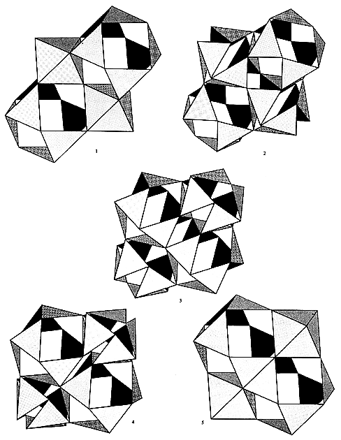

|  |
| Fig. 470.02D Reciprocity of Vector Equilibrium and Octahedra in Space-Filling Jitterbug: In the space-filling "jitterbug" transformation, the vector equilibria contract to become octahedra, and, because in space filling array there are equal numbers of octahedra and vector equilibria, the original octahedra expand and ultimately become vector equilibria. There is a complete change of the two figures. |